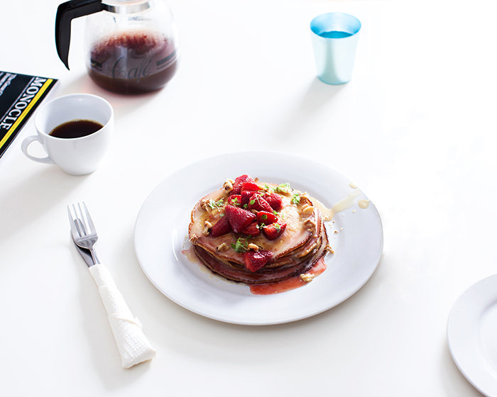
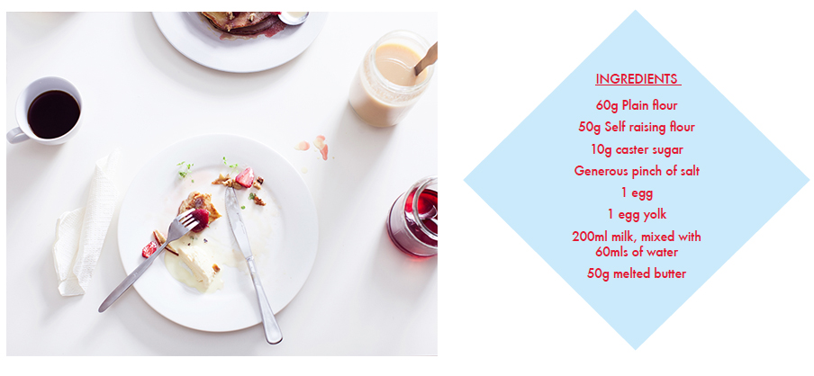
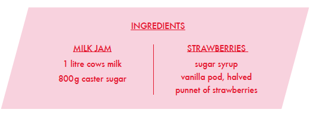

Milk jam (dulce de leche) is a guaranteed food high. It’ll send
an otherwise reasonable person weak at the knees, scrambling for
extra spoonfuls out of the jar. Powerful stuff. And great on pancakes.
These pancakes are kind of halfway between the fluffy American
style and the super thin French crepe. Fluffy enough to stack
up on a plate, but still thin enough to wrap around your fork.

Combine dry ingredients. Make a well in the centre, and add the eggs.
Mix in the milk and water until smooth. Cling wrap this mixture and leave
it in the fridge overnight, for at least 12 hours. The longer you leave
it, the better. When it comes to cooking, incorporate the melted butter,
and free up with a little water if the mix is too thick. It should look
smooth and glossy. Cook in a hot pan with extra melted butter.

For Milk Jam, combine 1 litre of good quality cows milk with 800g of
caster sugar. Heat on the stove and simmer very gently for 4 – 5 hours,
stirring every half an hour to prevent a skin forming on top.
Lastly, the strawberries. Bring a sugar syrup to the boil with a vanilla
pod, halved. Throw a punnet of strawberries in and allow to cool in the
liquid. Remove strawberries and reduce by half. Once cooled completely
once again add the strawberries to the syrup, and store in the fridge.